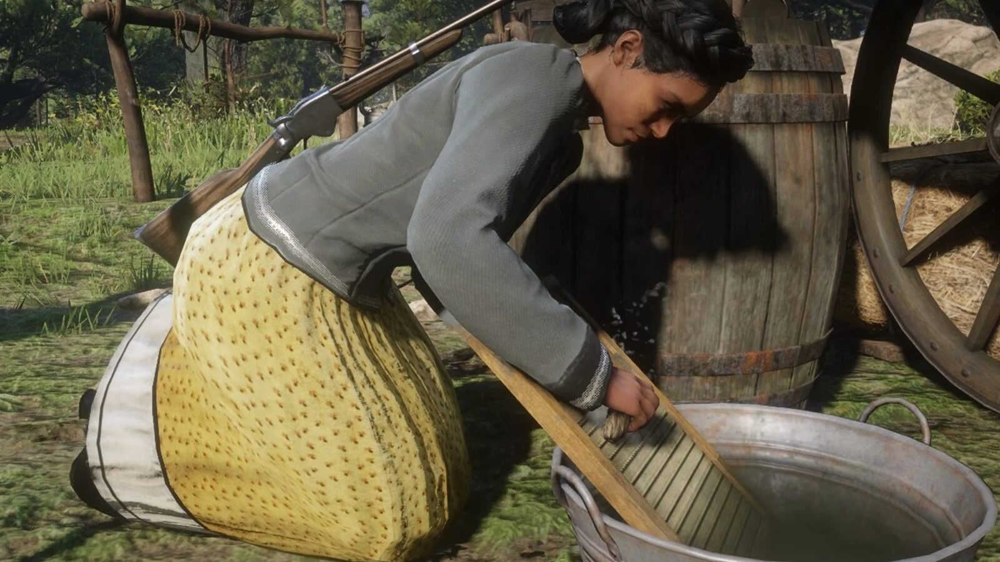
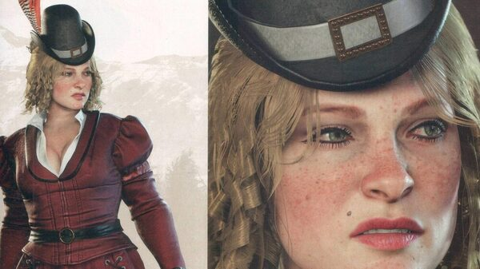
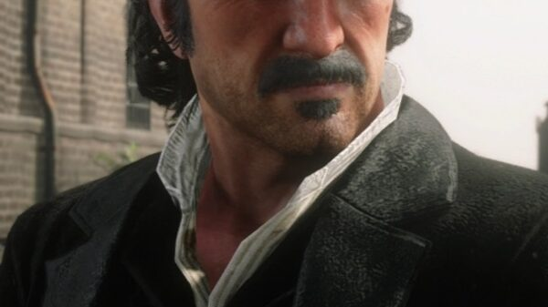
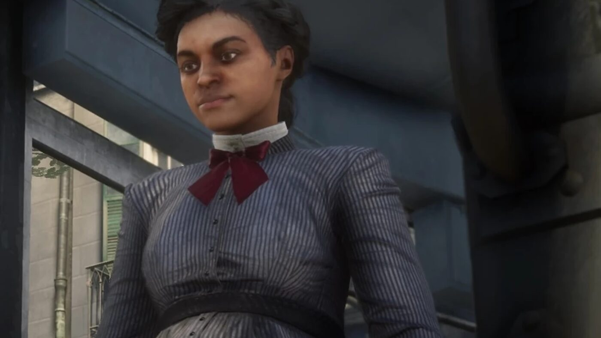

Personnage · Gang Van der Linde
Tilly Jackson
Tilly Jackson est membre du gang Van der Linde dans Red Dead Redemption 2. Rockstar la décrit comme une hors-la-loi depuis l'âge de 12 ans, débrouillarde, solide et fiable.
Elle survit à l'effondrement du gang et vit à Saint-Denis en 1907.
- Affiliation
- Gang Van der Linde ; frères Foreman auparavant
- Statut
- Vivante en 1907
- Nom plus tard
- Tilly Pierre
- Nationalité
- Américaine
- Voix
- Meeya Davis
- Jeux
- Red Dead Redemption 2
Biographie
Origines
D'après le guide officiel, le gang des frères Foreman arrache Tilly à sa mère quand elle a 12 ans. Elle passe plusieurs années avec eux et y est maltraitée, puis tue l'un de leurs membres et s'enfuit. Dutch la recueille et lui apprend à lire.
Au sein du gang
Au camp, Tilly travaille sous les ordres de Susan Grimshaw avec Karen et Mary-Beth. Lors de la virée à Valentine du chapitre 2, Anthony Foreman la reconnaît et la harcèle jusqu'à ce qu'Arthur intervienne.
Au chapitre 4, dans "No, No and Thrice, No", les Foreman l'enlèvent près du camp de Shady Belle et la retiennent à Radley's House. Grimshaw et Arthur la libèrent. Arthur capture Anthony Foreman et décide de le tuer ou de l'épargner, Grimshaw le poussant à en finir.
Les derniers jours du gang
Pendant le raid des Pinkerton sur Beaver Hollow, Tilly cache Jack Marston. Au retour du gang, elle annonce que l'agent Milton a enlevé Abigail. Arthur lui remet de l'argent et l'envoie avec Jack à Copperhead Landing, où Abigail et Sadie les rejoignent plus tard.
1907
En 1907, Tilly vit à Saint-Denis et a épousé un avocat originaire d'Haïti. John peut la croiser sur un banc de la ville ; elle est enceinte. Dans une lettre envoyée plus tard à John et Abigail, signée "Tilly Pierre", elle annonce la naissance de sa fille, dit voir toujours Mary-Beth, et écrit que Hosea avait été comme un père pour elle.
Relations

Karen Jones
"Une sœur" pour elle, écrit Tilly en 1907.
Mary-Beth Gaskill
Son amie au camp ; elles restent proches après le gang.
Susan Grimshaw
Dirige les femmes du camp et mène son sauvetage chez les Foreman.

Arthur Morgan
La sauve, puis la met à l'abri avec Jack.

Dutch van der Linde
La fait entrer dans le gang et lui apprend à lire.
Conception et interprétation
Tilly est interprétée par Meeya Davis, actrice originaire de Detroit, installée dans le New Jersey en 2012 pour étudier le jeu. Elle assure la voix et la capture de mouvement. Auprès de Fuzzable, en mars 2019, elle raconte avoir été convoquée pour ce qu'on lui présentait comme une audition pour une publicité, et n'avoir découvert le personnage qu'aux jours de tournage. Elle y précise aussi avoir fréquenté le même lycée que Harron Alexander, l'interprète de Lenny Summers.
Dans l'entretien croisé de GamesRadar avec les actrices du gang (mars 2019), Meeya Davis confie que la scène où Tilly raconte le meurtre du cousin d'Anthony Foreman l'a émue sur le plateau. Elle était enceinte de sept ou huit mois lorsqu'elle a tourné la scène de grossesse de Tilly, un cas où "l'art imite la vie", dit-elle.
Galerie
